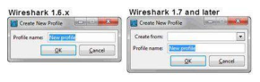

Wireshark Network Analysis 2nd Ed · Laura Chappell
One Wireshark, many analysis environments.
Profiles store your columns, coloring rules, filter bookmarks, and protocol preferences — switch contexts in one click.
No questions yet.
No notes yet.
💡THINK FIRST · PROFILES OVERVIEW
Wireshark profiles store all per-analyst configuration. Why is using profiles better than having a single shared configuration for an entire team?
HINT
Think about what needs to differ between a VoIP analyst, a security analyst, and a general network engineer using the same Wireshark installation.
MODEL ANSWER
Each analyst has different needs: VoIP analyst wants RTP stream details in columns and SIP-specific coloring rules; security analyst wants DNS anomaly filters and TCP reset highlighting; general engineer wants HTTP request methods and IP TTL. Profiles allow each person to maintain their own optimized configuration without interfering with others'. More practically, one person can maintain multiple profiles — a 'WiFi Analysis' profile with 802.11-specific columns and a 'Web Debug' profile with HTTP details — and switch with one click.
Wireshark Profiles Overview
A Wireshark profile is a named directory containing all user-customizable configuration files. The active profile's name appears in the bottom-right status bar. Click it to switch profiles.
Profiles are managed via Edit → Configuration Profiles (Ctrl+Shift+A).
Default Profile
The 'Default' profile stores its files in the Wireshark personal config directory:
Linux/Mac: ~/.config/wireshark/
Windows: %APPDATA%\Wireshark\
Named profiles are stored in subdirectories: ~/.config/wireshark/profiles/MyProfile/
🧠
MENTAL NOTE
Active profile shown in bottom-right status bar. Click to switch. Edit → Configuration Profiles (Ctrl+Shift+A) to manage. Each profile = a directory of config files. Default profile = the main config directory. Named profiles = subdirectories under 'profiles/'.
📷Figure 165 — open trace file to view
Figure 165. shows the contents of a Personal Configuration directory. When we defined our first profile, Wireshark created \profiles in our Personal Configurations directory. Inside the \profiles direc
Ask a Question
Add a Note
💡THINK FIRST · CREATING AND MANAGING PROFILES
When creating a new profile, Wireshark asks whether to copy settings from the current profile or start from scratch. When would you choose each option?
HINT
Think about the effort of building a profile from zero vs. having a known-good starting point.
MODEL ANSWER
Copy from current: when the new profile is a variation of an existing one (e.g. copy 'Web Analysis' to create 'Web Analysis - IPv6' and just change the IP column to show IPv6 addresses). Starting from scratch gives you Wireshark defaults — use this when you want to build an environment-specific profile without inheriting any configuration from the previous one. Starting from scratch is slower but ensures no unexpected inherited settings cause confusion.
Creating and Managing Profiles
In Edit → Configuration Profiles:
+ button — create new profile (option to copy from current or start from Default)
- button — delete selected profile (cannot delete the active profile)
Copy — duplicate a profile
Rename — double-click the profile name to rename
Switching Profiles
Three ways to switch:
Click the profile name in the bottom-right status bar → select from dropdown
Edit → Configuration Profiles → select + OK
Wireshark switches profiles instantly — no restart required
WORKFLOWCreate one profile per analysis domain: 'VoIP', 'Web', 'Security', 'DHCP', 'IPv6'. Each gets its own columns, coloring rules, and filter buttons. Switch profiles when the ticket changes type.
🧠
MENTAL NOTE
Create profile: Edit → Configuration Profiles → +. Copy from existing = inherit settings. Start fresh = Wireshark defaults. Switch instantly by clicking the profile name in the status bar. Delete requires switching to a different profile first.
📷Figure 163 — open trace file to view
Figure 163. shows the Wireshark Status Bar. The current profile in use is listed in the right column. In this case we are working with the default profile, but we can quickly choose another profile in

📷Figure 164 — open trace file to view
Figure 164. Make new profiles based on existing ones in more recent versions of Wireshark
Ask a Question
Add a Note
What Each Profile Stores
Each profile directory contains these configuration files:
File
Contents
preferences
GUI settings, column layout, protocol-specific preferences, name resolution settings
colorfilters
All coloring rules (name, filter, foreground/background colors)
cfilters
Saved capture filters (name + BPF expression)
dfilters
Saved display filters and filter expression toolbar buttons
hosts
Custom IP-to-hostname mappings for this environment
decode_as_entries
Custom protocol dissector assignments (e.g. port 8080 → HTTP)
All are plain text files — human-readable and editable in any text editor.
🧠
MENTAL NOTE
Profile files: preferences (everything), colorfilters (coloring rules), cfilters (capture filter bookmarks), dfilters (display filter bookmarks), hosts (custom names), decode_as_entries (custom dissectors). All plain text — can be version-controlled and shared via Git.
Ask a Question
Add a Note
💡THINK FIRST · SHARING PROFILES
You want to share your entire VoIP analysis profile with a new team member. What is the simplest mechanism, and what should you verify after they import it?
HINT
Profile files are text files in a directory. How can they be transferred?
MODEL ANSWER
Zip the entire profile directory and send it. The recipient creates a new profile in Wireshark and copies the files into the new profile's directory. Or: right-click the profile in the Configuration Profiles dialog and use the 'Import'/'Export' buttons if available in their Wireshark version. After import, verify: (1) columns display as expected; (2) coloring rules appear in View → Coloring Rules; (3) filter buttons appear in the toolbar; (4) custom hosts names resolve correctly (especially if IP addresses differ in their environment).
Sharing Profiles with Your Team
Profiles are just directories of text files — share them by copying the directory.
Export Method
Find the profile directory: Help → About Wireshark → Folders → Personal configuration
Navigate to the profiles/ subdirectory
Zip the profile folder and send it
Import Method
Extract the zip to the recipient's profiles/ directory
Restart Wireshark (or close and reopen the Configuration Profiles dialog)
The profile appears in the list
Team Considerations
Update the hosts file for each environment's IP-to-name mappings
Check decode_as_entries for application-specific port assignments
Consider maintaining profiles in a shared Git repository
VERSION CONTROLStore profiles in Git. Each analyst can maintain their own branch of customizations while inheriting the team's base coloring rules and display filter library. Merge requests for new coloring rules ensure consistency.
🧠
MENTAL NOTE
Share profiles: zip the profile directory, extract to recipient's profiles/ directory. Check hosts file — IP-to-name mappings are environment-specific. decode_as_entries — port assignments may differ. Consider Git for team profile management.
Ask a Question
Add a Note
TL;DR — CHAPTER 11
Profiles = named directories of configuration files. Each profile stores columns, coloring rules, filter bookmarks, name resolution, and protocol-specific settings. Create per-domain profiles (VoIP, Web, Security) and switch with one click via the status bar. Share by zipping the profile directory. Update the hosts file for each environment's IP mappings.
Review Questions
Q11.1
List four configuration elements stored in a Wireshark profile and the file that contains each.
HINT
Think about what changes when you switch between a VoIP and a Web analysis profile.
How do you quickly switch between profiles in Wireshark without going through the menu?
HINT
Where is the active profile name always visible?
ANSWER
Click the profile name in the bottom-right corner of the Wireshark status bar. A dropdown appears listing all available profiles. Click the desired profile — Wireshark switches immediately without requiring a restart. The status bar shows the active profile name at all times.
Q11.3
A teammate sends you a Wireshark profile zip file. After importing it, their custom hostnames don't show up for IPs in your environment. Why, and how do you fix it?
HINT
What file handles hostname mappings and what is environment-specific about it?
ANSWER
The hosts file in the profile directory maps IP addresses to hostnames. Your teammate's hosts file contains IP addresses from their environment, which are different from yours. Fix: open the hosts file in a text editor (one IP hostname pair per line) and replace their IP addresses with the corresponding IPs in your environment. Alternatively, add new entries for your environment's IPs without removing theirs (useful if you capture in multiple environments).